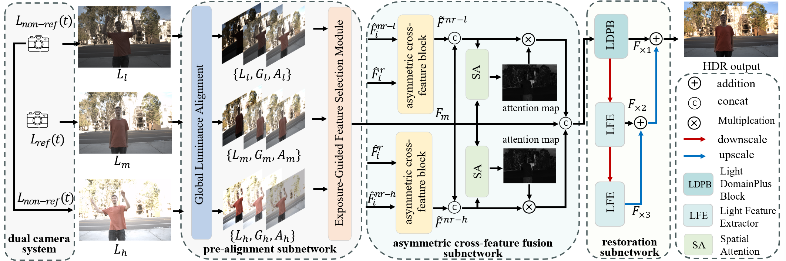

Capturing Stable HDR Videos Using a Dual-Camera System
Paradigm: We introduce a dual-stream HDR video generation paradigm that explicitly decouples temporal luminance anchoring from exposure-variant detail reconstruction.
System: We design and implement an asynchronous dual-camera system to validate the feasibility of our proposed solution and bridge the gap between algorithmic design and practical deployment.
Method: To support our dual-camera system, we propose a novel model design, EAFNet.
Results: Our proposed dual-stream HDR video generation paradigm demonstrates significant advancements across multiple aspects.
1Hangzhou Dianzi University ,
2City University of HongKong ,
*Corresponding author
We present a dual-camera HDR video paradigm that decouples temporal luminance anchoring from exposure-variant detail recovery.
In contrast to single-camera alternating-exposure pipelines that often suffer from flicker and ghosting in dynamic scenes,
our design uses a mid-exposure reference stream to stabilize temporal consistency and an auxiliary stream with alternating low/high exposures to supply extreme luminance details.
our contributions can be summarized as follows:
§Paradigm: We introduce a dual-stream HDR video generation paradigm that explicitly decouples temporal luminance anchoring from exposure-variant detail reconstruction.
§System: We design and implement an asynchronous dual-camera system to validate the feasibility of our proposed solution and bridge the gap between algorithmic design and practical deployment.
§Method: To support our dual-camera system, we propose a novel model design, EAFNet.
§Results: Our proposed dual-stream HDR video generation paradigm demonstrates significant advancements across multiple aspects.
The proposed pipeline achieves temporally stable, flicker-free HDR videos and remains compatible with existing HDR deghosting models.
We release code, data, and implementation details to facilitate adoption in real-world HDR video capture.
Quantitative Comparisons
Comparison with state-of-the-art methods.
Play, pause, or drag the progress bar on any video to control them all simultaneously!
Existing AE paradigm
HDRFlow
LANHDR
Our DS paradigm
AHDNet
SCTNet
EAFNet (Ours)
Real-world Comparisons
Qualitative comparisons on real-world dynamic scenes.
GT
Our Result
Intra-dataset evaluation: Table 1 reports the intra-dataset evaluation results on Prabhakar’s and Kalantari’s datasets.
Our EAFNet consistently achieves the best performance across both datasets.
On the Kalantari dataset, it surpasses the second-best method by 0.08 dB in PSNR-μ, while on the Prabhakar dataset, the margin increases to 0.49 dB.
These gains are complemented by improvements in SSIM-μ, indicating that our exposure-adaptive fusion strategy benefits both fidelity and structural consistency.
train and test on Kalantari’s dataset
train and test on Prabhakar’s dataset
Method
Metrics
PSNR-μ (↑)
PSNR-L (↑)
SSIM-μ (↑)
SSIM-L (↑)
HDR-VDP-2 (↑)
PSNR-μ (↑)
PSNR-L (↑)
SSIM-μ (↑)
SSIM-L (↑)
HDR-VDP-2 (↑)
Kalantari (CGF 2017)
42.74
41.22
0.9877
0.9848
60.51
35.63
32.50
0.09613
0.9692
59.42
AHDRNet (CVPR 2019)
43.77
41.35
0.9907
0.9859
62.30
38.61
35.26
0.9663
0.9794
61.14
Prabhakar (ECCV 2020)
43.08
41.68
-
-
62.21
38.30
34.98
0.9702
0.9781
-
HDR-Trans (ECCV 2022)
44.28
42.88
0.9916
0.9884
66.03
41.31
39.44
0.9726
0.9885
63.01
DomainPlus (MM 2022)
44.02
41.28
0.9910
0.9864
62.91
40.38
38.08
0.9698
0.9872
62.12
SCTNet (ICCV 2023)
44.13
42.12
0.9916
0.9890
66.65
41.23
38.75
0.9724
0.9881
62.29
SAFNet (ECCV 2024)
44.61
43.09
0.9918
0.9892
66.93
40.18
37.90
0.9705
0.9865
62.04
EAFNet (Ours)
44.69
42.19
0.9920
0.9895
68.35
41.80
40.13
0.9731
0.9895
63.53
Table1: Comparison results on Kalantari’s dataset and Prabhakar’s dataset. Best results are bold red, second-best are underlined blue.
Cross-dataset evaluation:
We further conduct cross-dataset validation, where training and testing are performed on different datasets (Table 2).
Our EAFNet maintains clear superiority in this challenging setting, with cross-domain gains even larger than in the intra-dataset case.
This demonstrates that our model does not overfit to dataset-specific statistics, but learns exposure-aware and motion-robust fusion representations that transfer effectively across domains.
The strong bidirectional results confirm the generality and domain-agnostic nature of our fusion mechanism.
train on Kalantari’s dataset, test on Prabhakar’s dataset
train on Prabhakar’s dataset, test on Kalantari’s dataset
Method
Metrics
PSNR-μ (↑)
PSNR-L (↑)
SSIM-μ (↑)
SSIM-L (↑)
PSNR-μ (↑)
PSNR-L (↑)
SSIM-μ (↑)
SSIM-L (↑)
AHDRNet (CVPR 2019)
33.96
32.46
0.9601
0.9542
40.03
36.71
0.9855
0.9758
HDR-Trans (ECCV 2022)
34.07
36.62
0.9675
0.9656
41.38
39.21
0.9890
0.9873
DomainPlus (MM 2022)
32.64
30.42
0.9046
0.9074
41.15
38.18
0.9873
0.9837
SCTNet (ICCV 2023)
33.83
30.95
0.9584
0.9521
40.88
37.59
0.9892
0.9842
SAFNet (ECCV 2024)
38.00
34.65
0.9597
0.9793
40.86
37.50
0.9882
0.9810
EAFNet (Ours)
39.26
35.99
0.9707
0.9848
42.02
39.38
0.9903
0.9870
Table2: Cross-dataset evaluation on Kalantari’s dataset and Prabhakar’s dataset. Best results are bold red, second-best are underlined blue.
dual-stream HDR video generation paradigm
We introduce a dual-stream HDR video generation paradigm that explicitly decouples temporal luminance anchoring from exposure-variant detail reconstruction. Our approach employs a fixed-exposure stream to maintain temporal alignment across frames, while a complementary stream with varying exposures enhances the dynamic range. This design fundamentally improves temporal consistency and reconstruction stability.
Figure 1: Overview of challenges in the alternating exposure (AE) paradigm and our proposed dual-stream paradigm for stable HDR video generation.
dual-camera system
We design and implement an asynchronous dual-camera system to validate the feasibility of our proposed solution and bridge the gap between algorithmic design and practical deployment.
Unlike traditional synchronized setups constrained by long-exposure frames, our system enables high-frame-rate video capture in dynamic scenes by supporting independent exposure control without requiring hardware-level synchronization.
Moreover, the system seamlessly integrates with existing image deghosting methods to achieve temporally consistent reconstruction.
Video Capture and System Design:
Our dual-camera system uses two identical cameras with resolution \(w \times h\). One camera records a medium-exposure reference sequence \(L_{ref}(t_1)\),
while the other alternates between low and high exposures \(L_{non\mbox{-}ref}(t_2)\) for dynamic range expansion.
We pair the low/high exposure frames with nearby reference frames using timestamp metadata.The input groups are then processed by the network to reconstruct HDR video at the same frame rate as \(L_{ref}(t_1)\).
Figure 2: Visualization of our dual-camera system. The primary camera captures continuous medium-exposure sequences as reference for temporal consistency, while the secondary camera alternates between low- and high-exposure to provide complementary information for reconstruction.
dataset
to do
Our exposure-adaptive fusion network

Figure 3: The architecture of EAFNet consists of a pre-alignment subnetwork, an asymmetric cross-feature fusion subnetwork, and a restoration subnetwork. We introduce GLA and EFSM to leverage exposure information, explore the intrinsic properties of the images, and help preserve finer details across varying exposures. The asymmetric cross-feature fusion subnetwork improves image fusion by aligning cross-scale features and performing cross-feature fusion. The reconstruction subnetwork adopts a multi-scale architecture to reduce ghosting and refine features at different resolutions.
Conclusion
In this work, we revisited the fundamental cause of temporal instability in alternating-exposure (AE) HDR video,
which lies in the entanglement of temporal luminance anchoring with exposure-dependent detail selection,
and proposed a dual-stream paradigm that explicitly decouples these two roles. Extensive experiments on multiple datasets and real-world sequences demonstrate that the proposed paradigm improves both temporal stability and reconstruction quality compared with AE-based baselines, while remaining cost-efficient and deployment-friendly.
Our dual-camera framework provides a promising direction for real-time HDR video capture.
BibTeX
@article{zhang2025capturing,
title={Capturing Stable HDR Videos Using a Dual-Camera System},
author={Zhang, Qianyu and Zheng, Bolun and Pan, Hangjia and Zhu, Lingyu and Zhu, Zunjie and Li, Zongpeng and Wang, Shiqi},
journal={arXiv preprint arXiv:2507.06593},
year={2025}
}